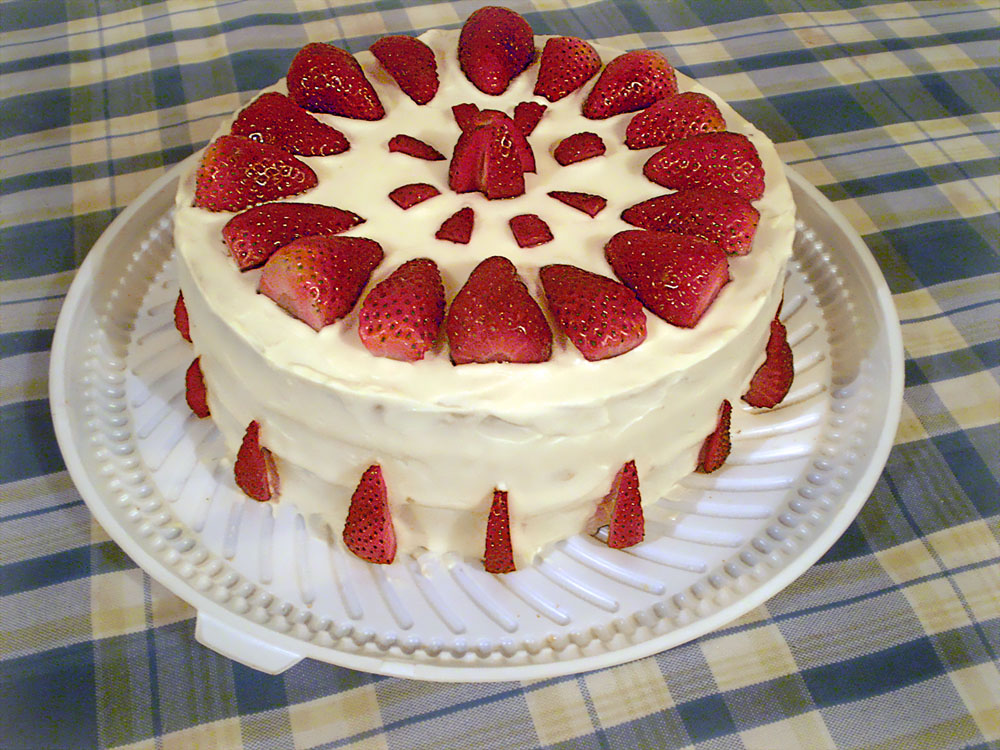

Gör en supergod tårta med jordgubbar på
Receptet förutsätter att du redan har gjort en tårtbotten. Tryck på länken för recept. (LÄNK)
Ingredienser
- Jordgubbar 1 l
- Grädde 3 dl
- Jordgubbssylt 2 dl
- vaniljkräm 2 dl
Gör såhär
- Vispa grädden tills dess att den blir fluffig
- Skär din botten i 3 lika tjocka delar
- Bred ut jordgubbssylet på den understa delen av tårtbottnen
- Lägg på nästa del och bred vaniljkrämen på den
- Lägg på den sista delen och täck hela tårtan med grädde. Pryd därefter tårtan med jordgubbar
- SERVERA